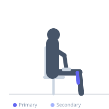

Exercise guide / Seated Calf Raise — Toes Angled In
Seated Calf Raise — Toes Angled In
A seated calf raise performed with the toes angled inward (pigeon-toed position), which shifts the emphasis toward the outer head of the gastrocnemius and the lateral soleus fibers. The seated position places the knee at 90 degrees of flexion, reducing gastrocnemius contribution and increasing soleus activation relative to a standing variation. This variation is used in calf rehabilitation and strength programs targeting specific fiber imbalances.
Primary muscles
soleus
gastrocnemius lateral
Secondary muscles
gastrocnemius medial
Equipment
Dumbbell (Fixed)


Starting position
- Sit on a bench or chair with feet flat on the floor or on an edge for greater ROM. Turn the toes inward (internally rotate the feet) approximately 15-30 degrees. Rest a dumbbell or plate on each thigh if adding resistance.
Setup
- Use a flat bench with a plate on the thigh for resistance, or a dedicated seated calf raise machine. Position the balls of the feet on the edge of a step if greater stretch is desired.
Steps
- Step 1: Sit tall with toes turned inward and feet positioned on the edge for full range.
- Step 2: Lower the heels as far as comfortable to achieve a full dorsiflexion stretch.
- Step 3: Press through the balls of the feet to rise onto the toes, achieving full plantarflexion.
- Step 4: Lower back down under control. Repeat.
Coaching cues
- Let the heel drop below the forefoot to get the full stretch
- Squeeze the outer calf at the top of each rep
- Keep the knee angle constant — do not straighten the leg during the movement
Breathing
- Exhale as you rise onto the toes. Inhale as you lower.
Range of motion
- Full range: from maximum dorsiflexion (heel at or below forefoot level) to maximum plantarflexion (full toe rise).
Tempo
- 2-1-2-1 (2s lower, 1s stretch, 2s rise, 1s squeeze at top)
Common mistakes
- Using partial range — not achieving full stretch at the bottom
- Bouncing at the bottom rather than controlling the eccentric
- Rotating the entire lower leg rather than just turning toes in
Safety
- If you experience lateral knee discomfort with toes-in position, reduce the angle of inward rotation
- Avoid with acute Achilles tendinopathy — consult a physiotherapist
Training
- endurance: 15–25 reps
- mobility: 10–15 reps
- endurance: 2–4 sets
- mobility: 2–3 sets
- Rest: {'endurance': 45, 'mobility': 60}